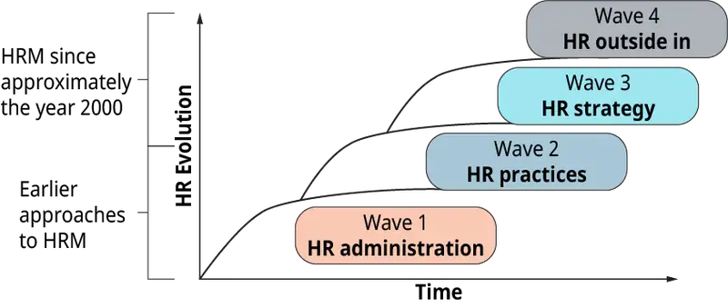
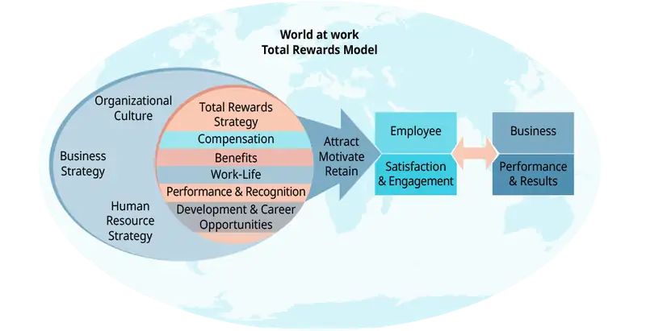

Chapter 11: Human Resource Management¶
Introduction¶
Learning Outcomes
After reading this chapter, you should be able to answer these questions:
- What has been the evolution of human resource management over the years, and what is the current value it provides to an organization?
- How does the human resources compliance role of HR provide value to a company?
- How do performance management practices impact company performance?
- How do companies use rewards strategies to influence employee performance and motivation?
- What is talent acquisition, and how can it create a competitive advantage for a company?
- What are the benefits of talent development and succession planning?
Exploring Managerial Careers: Eva Hartmann, Trellis LLC
Eva Hartmann has nearly 20 years of experience as a strategic, results-driven, innovative leader with significant expertise in human resources strategy, talent and leadership development, and organizational effectiveness. She has worked in a variety of industries, from manufacturing to Fortune 500 consulting. Eva is a transformational change agent who has developed and led strategic human capital programs and talent initiatives in multiple challenging environments globally. Eva is passionate about enhancing both individual and organizational performance.
Eva began her career in one of the large “Big 6” management consulting firms at the time, and she happily returned several years ago to consulting. She is the founder and president of Trellis LLC, a human capital consulting and staffing firm in Richmond, Virginia.
Prior to Trellis, Eva was the global human resources leader for a large global manufacturer of plastic film products and was responsible for the HR strategy and operations of a $600 million global division. In this role, Eva led a global team of HR managers in North and South America, Europe, and Asia to support global HR initiatives to drive business results and build human capital and performance across the division.
Eva has also held a variety of leadership and managerial roles in both human resources and quality functions at several nationally and globally recognized companies, including Wachovia Securities, Genworth Financial, Sun Microsystems, and Andersen Consulting (now Accenture).
Eva holds an MBA from the College of William and Mary in Williamsburg, Virginia, and a BA in anthropology from the University of Virginia in Charlottesville, Virginia. She is also an adjunct faculty member with the University of Richmond Robins School of Business. Eva currently serves on the board of the Society of Human Resource Management (SHRM) of Richmond, Virginia.
Human resource management is an area that has evolved a great deal over the last few decades. From the days of the very tactical “personnel” management to the current and more strategic state of human resources, businesses and HR professionals alike have changed the way they see the function. In the current economy, human capital assets (i.e., people) are the greatest value creators. Companies compete for talent, and they distinguish themselves in their business performance by the talent they have in their ranks. Human resource management, therefore, becomes a key lever companies can utilize to find, recruit, develop, and grow talent for competitive advantage. This chapter discusses the value and benefits that human resource management brings to an organization, as well as the challenges that the function still faces as a strategic partner to the business.
11.1 An Introduction to Human Resource Management¶
- What has been the evolution of human resource management (HRM) over the years, and what is the current value it provides to an organization?
Human resource management over the years has served many purposes within an organization. From its earliest inception as a primarily compliance-type function, it has further expanded and evolved into its current state as a key driver of human capital development. In the book HR From the Outside In (Ulrich, Younger, Brockbank, Younger, 2012), the authors describe the evolution of HR work in “waves”. Wave 1 focused on the administrative work of HR personnel, such as the terms and conditions of work, delivery of HR services, and regulatory compliance. This administrative side still exists in HR today, but it is often accomplished differently via technology and outsourcing solutions. The quality of HR services and HR’s credibility came from the ability to run administrative processes and solve administrative issues effectively. Wave 2 focused on the design of innovative HR practice areas such as compensation, learning, communication, and sourcing. The HR professionals in these practice areas began to interact and share with each other to build a consistent approach to human resource management. The HR credibility in Wave 2 came from the delivery of best-practice HR solutions.
Wave 3 HR, over the last 15–20 years or so, has focused on the integration of HR strategy with the overall business strategy. Human resources appropriately began to look at the business strategy to determine what HR priorities to work on and how to best use resources. HR began to be a true partner to the business, and the credibility of HR was dependent upon HR having a seat at the table when the business was having strategic discussions. In Wave 4, HR continues to be a partner to the business, but has also become a competitive practice for responding to external business conditions. HR looks outside their organizations to customers, investors, and communities to define success—in the form of customer share, investor confidence, and community reputation. HR’s credibility is thus defined in terms of its ability to support and drive these external metrics. Although each “wave” of HR’s evolution is important and must be managed effectively, it is the “outside in” perspective that allows the human resource management function to shine via the external reputation and successes of the organization.

Catching the Entrepreneurial Spirit: Human Resources Outsourcing—Entrepreneurial Ventures
Human resources is a key function within any company, but not all companies are able to afford or justify full-time HR staff. Over the last decade, HR outsourcing has become a good business decision for many small companies whose current staff doesn’t have the bandwidth or expertise to take on the risks of employee relations issues, benefits and payroll, or HR compliance responsibilities. This has led many HR practitioners to try out their entrepreneurial skills in the areas of HR outsourcing and “fractional HR.”
Human resources outsourcing is very commonly used by smaller companies (and often large companies too) to cover such tasks as benefits and payroll management. This is an area that has been outsourced to third parties for many years. More recent is the trend to have “fractional HR” resources to help with the daily/weekly/monthly HR compliance, employee relations, and talent management issues that companies need to address. Fractional HR is a growing industry, and it has become the service offering of many entrepreneurial HR ventures. Fractional HR is essentially as it sounds—it is the offering of HR services to a company on a part-time or intermittent basis when the company may not be able to justify the cost of a full-time HR resource. An HR professional can be available onsite for a specified number of hours or days weekly or monthly, depending on the company’s needs and budget. The HR professional handles everything from HR compliance issues and training to employee issues support. Also, for companies that are keen on development of employees, the HR resource can drive the talent management processes—such as performance management, succession planning, training, and development—for companies who require more than just basic HR compliance services.
How does a business leader decide whether HR outsourcing is needed? There are generally two factors that drive a leader to consider fractional HR or HR outsourcing—time and risk. If a leader is spending too much time on HR issues and employee relations, he may decide that it is a smart tradeoff to outsource these tasks to a professional. In addition, the risk inherent in some HR issues can be very great, so the threat of having a lawsuit or feeling that the company is exposed can lead the company to seek help from a fractional HR professional.
HR entrepreneurs have taken full advantage of this important trend, which many say will likely continue as small companies grow and large companies decide to off-load HR work to third parties. Some HR companies offer fractional HR as part of their stated HR services, in addition to payroll and benefits support, compensation, and other HR programmatic support. Having a fractional HR resource in place will often illuminate the need for other HR services and program builds, which are generally supported by those same companies. Whether you are an individual HR practitioner or have a small company of HR practitioners and consultants, fractional HR and HR outsourcing can be a very viable and financially rewarding business model. It can also be very personally rewarding, as the HR professional enables smaller companies to grow and thrive, knowing that its HR compliance and processes are covered.
Discussion Questions
What do you believe is contributing to the growth of the fractional HR and HR outsourcing trend? Do you expect this trend to continue?
At what point should a company consider bringing on a full-time HR resource instead of using a fractional HR resource? What questions should the company ask itself?
Human resource management provides value to an organization, to a large extent, via its management of the overall employee life cycle that employees follow—from hiring and onboarding, to performance management and talent development, all the way through to transitions such as job change and promotion, to retirement and exit. Human capital is a key competitive advantage to companies, and those who utilize their human resource partners effectively to drive their human capital strategy will reap the benefits.
Human resource management includes the leadership and facilitation of the following key life cycle process areas:
- Human resources compliance
- Employee selection, hiring, and onboarding
- Performance management
- Compensation rewards and benefits
- Talent development and succession planning
Human resources is responsible for driving the strategy and policies in these areas to be in accordance with and in support of the overall business strategy. Each of these areas provides a key benefit to the organization and impacts the organization’s value proposition to its employees.
Concept Check
How has the function of human resource management evolved over the years?
In what way do you usually interact with human resources?
11.2 Human Resource Management and Compliance¶
- How does the human resources compliance role of HR add value to an organization?
Human resources compliance is an area that traces back to the very origin of the human resources function—to administrative and regulatory functions. Compliance continues to be a very important area that HR manages, and there are numerous regulations and laws that govern the employment relationship. HR professionals must be able to understand and navigate these laws to help their organizations remain compliant and avoid having to pay fines or penalties. The additional threat of reputational harm to the organization is another reason that HR needs to be aware and alert to any potential gaps in compliance.
Some of the most common examples of laws and regulations that govern the employer-employee relationship include the following (SHRM.org):
- Age Discrimination in Employment Act (ADEA)
- Americans with Disabilities Act (ADA)
- Fair Labor Standards Act (FLSA)
- Family and Medical Leave Act (FMLA)
- National Labor Relations Act (NLRA)
- Worker Adjustment and Retraining Notification Act (WARN)
The Age Discrimination in Employment Act (ADEA) of 1967 protects individuals who are 40 years of age or older from employment discrimination based on age. These protections apply to both employees and job applicants. It also makes it unlawful to discriminate based on age with respect to any terms of employment, such as hiring, firing, promotion, layoff, compensation, benefits, job assignments, and training.
The Americans with Disabilities Act (ADA) of 1990 prohibits private employers, state and local governments, employment agencies, and labor unions from discriminating against qualified individuals with disabilities. The ADA defines an individual with a disability as a person who: 1) has a mental or physical impairment that substantially limits one or more major life activities, 2) has a record of such impairment, or 3) is regarded as having such impairment. An employer is required to make a reasonable accommodation to the known disability of a qualified applicant or employee if it would not impose an “undue hardship” on the operation of the employer’s business.
The Fair Labor Standards Act (FLSA) of 1938 establishes the minimum wage, overtime pay, recordkeeping, and youth employment standards affecting full-time and part-time workers in the private sector and in federal, state, and local governments. Special rules apply to state and local government employment involving fire protection and law enforcement activities, volunteer services, and compensatory time off instead of cash overtime pay.
The Family and Medical Leave Act (FMLA) of 1993 entitles eligible employees to take up to 12 weeks of unpaid, job-protected leave in a 12-month period for specified family and medical reasons. FMLA applies to all public agencies, including state, local, and federal employers, local education agencies (schools), and private-sector employers who employed 50 or more employees in 20 or more workweeks in the current or preceding calendar year, including joint employers and successors of covered employers.
The National Labor Relations Act (NLRA) of 1935, which was later amended in 1947, extends rights to many private-sector employees, including the right to organize and bargain with their employer collectively. Employees covered by the act are protected from certain types of employer and union misconduct and have the right to attempt to form a union where none exists.
The Worker Adjustment and Retraining Notification Act (WARN) of 1988 generally covers employers with 100 or more employees, not counting those who have worked less than six months in the last 12 months and those who work an average of less than 20 hours a week. Regular federal, state, and local government entities that provide public services are not covered. WARN protects workers, their families, and communities by requiring employers to provide notification 60 calendar days in advance of plant closings and mass layoffs.
These are just a few of the key regulatory federal statutes, regulations, and guidance that human resources professionals need to understand to confirm organizational compliance. For additional information on HR compliance resources, the Society of Human Resource Management (SHRM) at SHRM.org maintains a plethora of resources for the HR professional and the businesses that they support.
To ensure the successful management and oversight of the many compliance rules and regulations, the human resources team must utilize best practices to inform and hold employees accountable to HR compliance practices. Some of these best practices include education and training, documentation, and audit. Each of these is described in greater detail, and will help HR achieve its important goal of maintaining HR compliance for the organization.
Education and training in the areas of compliance and labor law is critical to ensure that all applicable laws and regulations are being followed. These laws can change from year to year, so the HR professionals in the organization need to ensure that they are engaged in ongoing education and training. It is not just imperative for the HR professional to receive training. In many organizations, managers receive training on key rules and regulations (such as FMLA or ADA, to name a few) so that they have a foundation of knowledge when dealing with employee situations and potential risk areas. Human resources and management need to partner to ensure alignment on compliance issues—especially when there is a risk that an employee situation treads into compliance regulation territory. See Table 11.1 for a partial list of federal labor laws by number of employees, as displayed on the Society for Human Resource Management website.
Refer to Table 11.1: Federal Labor Laws by Number of Employees.
Table 11.1 (Attribution: Copyright Rice University, OpenStax, under CC-BY 4.0 license)
| Federal Labor Laws by Number of Employees |
|---|
| American Taxpayer Relief Act of 2012 |
| Consumer Credit Protection Act of 1968 |
| Employee Polygraph Protection Act of 1988 |
| Employee Retirement Income Security Act of 1974 (ERISA) |
| Equal Pay Act of 1963 |
| Fair and Accurate Credit Transaction Act of 2003 (FACT) |
| Fair Credit Reporting Act of 1969 |
| Fair Labor Standards Act of 1938 |
| Federal Insurance Contributions Act of 1935 (Social Security) (FICA) |
| Health Insurance Portability and Accountability Act of 1996 (if a company offers benefits) (HIPPA) |
| Immigration Reform and Control Act of 1986 |
| These federal laws cover all employees of all organizations. Several other factors may apply in determining employer coverage, such as whether the employer is public or private, whether the employer offers health insurance, and whether the employer uses a third party to conduct background checks. Source: SHRM website, https://www.shrm.org/, accessed October 20, 2018. |
Documentation of the rules and regulations—in the form of an employee handbook—can be one of the most important resources that HR can provide to the organization to mitigate compliance risk. The handbook should be updated regularly and should detail the organization’s policies and procedures and how business is to be conducted. Legal counsel should review any such documentation before it is distributed to ensure that it is up-to-date and appropriate for the audience.
Scheduling HR compliance audits should be part of the company’s overall strategy to avoid legal risk. Noncompliance can cause enormous financial and reputational risk to a company, so it is important to have audits that test the organization’s controls and preparedness. When the human resources function takes the lead in implementing audits and other best practices, they create real value for the organization.
Concept Check
What are some of the key regulations that guide the compliance work of human resource management?
What does an employee handbook provide to an organization?
11.3 Performance Management¶
- How do performance management practices impact company performance?
Performance management practices and processes are among the most important that human resources manages, yet they are also among the most contentious processes in an organization. Many people view performance management as a human resources role and believe that it is in some parallel path with the business. On the contrary, for the process to be successful, it should not only be human resources that is responsible for driving performance. For the (typically) annual performance management process, human resources and line management should partner on the implementation and ongoing communication of the process. Although HR is responsible for creating and facilitating the performance management processes, it is the organizational managers that need to strongly support the process and communicate the linkage of performance management to overall organizational goals and performance. In my experience, it was helpful when business leadership emphasized that performance management isn’t a human resources process—it is a mission-critical business process. If a business manager can’t track and drive performance at the individual level, then the overall organization won’t know how it’s tracking on overall organizational goals. Before discussing the state of performance management in the workplace today, it is important to understand the origin of performance management. Performance management began as a simple tool to drive accountability (as it still does) but has evolved more recently into a tool used for employee development.
Performance management can be tracked back to the U.S. military’s “merit rating” system, which was created during World War I to identify poor performers for discharge or transfer (“The Performance Management Revolution,” Harvard Business Review, October 2016). After World War II, about 60% of all U.S. companies were using a performance appraisal process. (By the 1960s nearly 90% of all U.S. companies were using them.) Although the rules around job seniority determined pay increases and promotions for the unionized worker population, strong performance management scores meant good advancement prospects for managers. In the beginning, the notion of using this type of system to improve performance was more of an afterthought, and not the main purpose. By the 1960s or so, when we started to see a shortage of managerial talent, companies began to use performance systems to develop employees into supervisors, and managers into executives.
In 1981, when Jack Welch became CEO of General Electric, he championed the forced-ranking system—another military creation. He did this to deal with the long-standing concern that supervisors failed to label real differences in performance (HBR, The Performance Management Revolution). GE utilized this performance management system to shed the people at the bottom. They equated performance with people’s inherent capabilities and ignored their potential to grow. People were categorized as “A” players (to be rewarded), “B” players (to be accommodated), and “C” players (to be dismissed). In the GE system, development was reserved for the “A” players—and those with high potential were chosen to advance to senior positions. Since the days of GE’s forced ranking, many companies have implemented a similar forced-ranking system, but many have backed away from the practice. After Jack Welch retired, GE backed away from the practice as well. Companies, GE included, saw that it negatively fostered internal competition and undermined collaboration and teamwork and thus decided to drop forced ranking from their performance management processes.
Most people agree, in theory, that performance management is important. What people may not agree on is how performance management should be implemented. As the dissatisfaction with performance management processes began to increase, some companies began to change the way they thought about performance. In 2001, an “Agile Manifesto” was developed by software developers and “emphasized principles of collaboration, self-organization, self-direction, and regular reflection on how to work more effectively, with the aim of prototyping more quickly and responding in real-time to customer feedback and changes in requirements.” (Performance Management Revolution, HBR). The impact on performance management was clear, and companies started to think about performance management processes that were less cumbersome, incorporated frequent feedback, and delivered performance impacts.
In a recent public survey by Deloitte Services, 58% of executives surveyed believed that their current performance management approach drives neither employee engagement nor high performance. They need something more nimble, real-time, and individualized—and focused on fueling performance in the future rather than assessing it in the past. (“Reinventing Performance Management,” Harvard Business Review, Buckingham and Goodall, 2015). In light of this study, Deloitte became one of the companies that has recently sought to redesign their performance processes. As part of their “radical redesign,” they seek to see performance at the individual level, and thus they ask team leaders about their own future actions and decisions with respect to each individual. They ask leaders what they’d do with their team members, not what they think of them (“Reinventing Performance Management,” HBR). The four questions that Deloitte asks of its managers are as follows:
- Given what I know of this person’s performance, and if it were my money, I would award this person the highest possible compensation increase and bonus.
- Given what I know of this person’s performance, I would always want him or her on my team.
- This person is at risk for low performance.
- This person is ready for promotion today.
Although there has been some discussion over the last several years about some companies wanting to drop performance appraisals completely, most of the research seems to support that the total absence of performance management doesn’t help either. A recent global survey by CEB Global reports that more than 9,000 managers and employees think that not having performance evaluations is worse than having them. (“Let’s Not Kill Performance Evaluations Yet,” HBR, Nov 2016, Goler, Gale, Grant). Their findings indicate that even though every organization has people who are unhappy with their bonuses or disappointed that they weren’t promoted, research shows that employees are more willing to accept an undesirable outcome when the process is fair. The key question really becomes: how can HR help the business create a process to fairly evaluate performance and enhance employee development while not burdening the business with undue bureaucracy and non-value-added activities?
Managing Change: Global versus Local HR
Multinational companies are always challenged to determine the balance between global and local needs when creating a human resource management strategy. Some large companies weigh heavily on the side of centralization, with very few local deviations from the global strategy. Others may allow more localization of processes and decision-making if there are very specific local cultural needs that must be addressed. In either case, companies are well-served by maintaining global standards while also allowing for local market adaptation in the human resources areas where it makes the most sense.
According to the MIT Sloan Management Review article “Six Principles of Effective Global Talent Management” (Winter 2012), most multinational companies introduce global performance standards, competency profiles, and performance management tools and processes. These are the human resources areas that are most closely linked to the overall strategies and goals, and thus remain at the global level. Those HR processes that are not perceived as being as closely linked to the strategy and that may need to have local market inputs include processes such as training and compensation. Hiring practices may also need to be locally adapted, due to country-specific labor laws and challenges. One caveat, however, is that a company may limit itself in terms of its global talent management if it has too many country-specific adaptations to hiring, assessment, and development processes for top talent. It is important that the company takes a global approach to talent management so that cross-learning opportunities and cross-cultural development opportunities can take place.
One of the most important aspects of global talent management is that a company can break down silos and pollinate the business with talented employees from around the globe. Some companies even have global leadership programs that bring together high-potential leaders from across the organization to build camaraderie, share knowledge, and engage in learning. Others have created rotational programs for leaders to be able to experience new roles in other cultures in order to build their personal resumes and cultural intelligence. Human resources can have an enormous impact on the company’s ability to harness the power of a global talent pool when they create a global network for talent while also balancing this with the requirements of the local market.
Discussion Questions
What are the challenges of a company developing a different competency model or performance management process for each of its local offices?
Why might compensation programs and hiring practices need to have local adaptation? What would be the risks if these were not adapted to local markets?
As organizations evaluate their options for a performance management system, human resources and business leadership need to consider several challenges that will need to be addressed—no matter what the system. (“The Performance Management Revolution,” Capelli and Tavis, HBR, pp. 9-11).
The first is the challenge of aligning individual and company goals. Traditionally, the model has been to “cascade” goals down through the organization, and employees are supposed to create goals that reflect and support the direction set at the top. The notion of SMART goals (Specific, Measurable, Achievable, Relevant, Timebound) has made the rounds over the years, but goal setting can still be challenging if business goals are complex or if employee goals seem more relatable to specific project work than to the overall top-line goals. The business and the individual need to be able to respond to goal shifts, which occur very often in response to the rapid rate of change and changing customer needs. This is an ongoing issue that human resources and business leadership will need to reconcile.
The next key challenge to think about when designing a performance management process is rewarding performance. Reward structures are discussed later in this chapter, but reward systems must be rooted in performance management systems. Currently, the companies that are redesigning their performance processes are trying to figure out how their new practices will impact their pay-for-performance models. Companies don’t appear to be abandoning the concept of rewarding employees based on and driven by their performance, so the linkage between the two will need to be redefined as the systems are changed.
The identification of poor performers is a challenge that has existed since the earliest days of performance management, and even the most formal performance management process doesn’t seem to be particularly good at weeding out poor performers. A lot of this is due to the managers who evaluate employees and are reluctant to address the poor performers that they’re seeing. Also, the annual performance management process tends to make some managers feel that the poor performance should be overlooked during the year and only addressed (often ineffectively) during a one-per-year review. Whatever new performance management models an organization adopts, they will have to ensure that poor performance is dealt with in real time and is communicated, documented, and managed closely.
Avoiding legal troubles is another ongoing challenge for organizations and is another reason for real-time communication and documentation of performance issues. Human resources supports managers as they deal with employee relations issues, and the thought of not having a formal, numerical ratings system is unfathomable for some people who worry about defending themselves against litigation. However, because even formal performance processes can be subjective and may reveal ratings bias, neither the traditional formal process nor some of the radical new approaches can guarantee that legal troubles will never develop. From my experience, the best strategy for effective and fair performance management is real-time communication and documentation of issues. The employee is told about his or her performance issues (in as close to real time as possible), and the manager has documented the performance issues and conversations objectively and has engaged human resources with any larger or more complex issues.
“Managing the feedback firehose” and keeping conversations, documentation, and feedback in a place where it can be tracked and utilized is an ongoing challenge. The typical annual performance process is not conducive to capturing ongoing feedback and conversations. There have been some new technologies introduced (such as apps) that can be used to capture ongoing conversations between managers and employees. General Electric uses an app called PD@GE (PD = performance development) that allows managers to pull up notes and materials from prior conversations with employees. IBM has a similar app that allows peer-to-peer feedback. Although there are clearly some technology solutions that can be used to help communicate and collect feedback, human resources will need to continue to communicate and reinforce rules around objectivity and appropriate use of the tools.
Performance management processes—traditional and inventive new approaches alike—will face the same challenges over time. Human resource management professionals need to be aware of these challenges and design a performance management system that addresses them in the format and within the context of their culture.
Concept Check
Where did the concept of performance management originate?
What are some of the key challenges of any performance management process?
11.4 Influencing Employee Performance and Motivation¶
- How do companies use rewards strategies to influence employee performance and motivation?
Both performance management and rewards systems are key levers that can be used to motivate and drive individual and group performance ... which leads to overall organizational performance, productivity, and growth. Performance and rewards systems are also “cultural” in that they provide a glimpse into the way a company manages the performance (or nonperformance) of its employees, and to what extent they are willing to differentiate and reward for that performance. There has been a great deal of discussion over the years to identify best practices in the ways we differentiate and reward employees, which will also drive employee performance and motivation.
Before we can talk about best practices and findings in rewards and motivation systems, we must first define the terms. Rewards systems are the framework that an organization (generally via human resources) creates and manages to ensure that employee performance is reciprocated with some sort of reward (e.g., monetary or other extrinsic) that will drive and motivate the employee to continue to perform for the organization. Rewards programs consist primarily of compensation programs and policies, but can also include employee benefits and other extrinsic rewards that fulfill employee needs.
Within human resource management, the primary focus of a rewards program in an organization is to successfully implement a compensation system. Most organizations strive to implement a pay-for-performance compensation program that offers competitive pay in the marketplace and allows differentiation of compensation based on employee performance. Pay for performance begins with a philosophy that an organization adopts that states that they seek to reward the best-performing employees to enhance business performance and take care of those who can have the greatest impact.
In the 2011 SHRM article by Stephen Miller, entitled “Study: Pay for Performance Pays Off,” Miller says that companies’ top four drivers for moving to a pay-for-performance strategy are to:
- Recognize and reward high performers (46.9%)
- Increase the likelihood of achieving corporate goals (32.5%)
- Improve productivity (7.8%)
- Move away from an entitlement culture (7.8%)
The study also showed that the drivers differed depending on whether the company was high performing or lower performing. Almost half of high-performing organizations indicated that recognizing and rewarding top performers was the main driver of their pay-for-performance strategy, making it number one on the list of primary drivers. Lower-performing organizations did not appear to be as sure about the drivers behind their strategy. The number one driver among this group was achieving corporate goals. It appears that those top-performing organizations that implement a pay-for-performance strategy truly believe in the idea of differentiating among different levels of performance.
According to the 2015 World at Work “Compensation Programs and Practices Report,” pay for performance continues to thrive with better than 7 in 10 (72%) companies saying that they directly tie pay increases to job performance, and two-thirds (67%) indicating increases for top performers are at least 1.5 times the increase for average performers. In addition, the results of the survey seem to indicate that employees’ understanding of the organization’s compensation philosophy improves when there is higher differentiation in increases between average and top performers. The greater differentiation of increases is more visible and drives home the point that the company is serious about pay for performance.
A pay-for-performance program may have many components, and the human resources organization has the challenge of designing, analyzing, communicating, and managing the different components to ensure that the philosophy and the practices themselves are being carried out appropriately and legally. Human resource management’s role in establishing pay for performance is that HR must engage business leadership to establish the following elements of the framework:
- Define the organization’s pay philosophy. Leadership needs to agree that they will promote a culture that rewards employees for strong performance.
- Review the financial impacts of creating pay-for-performance changes. How much differentiation of performance will we have? What is the cost of doing this?
- Identify any gaps that exist in the current processes. If any of the current human resources and compensation policies conflict with pay for performance, they should be reviewed and changed. Examples may lie in the performance management process, the merit increase process, and the short-term and long-term bonus processes. If the performance management process has gaps, these should be corrected before pay for performance is implemented; otherwise this will generate more distrust in the system. The salary structure should also be benchmarked with market data to ensure that the organization is compensating according to where it wishes to be in the marketplace.
- Update compensation processes with new pay for-performance elements. This includes the design of a merit matrix that ties employee annual pay increases to performance. Other areas of focus should be the design of a short-term bonus matrix and a long-term bonus pay-for-performance strategy. In other words, how does performance drive the bonus payouts? What is the differential (or multiplier) for each level?
- Communicate and train managers and employees on the pay for-performance philosophy and process changes. Explain the changes in the context of the overall culture of the organization. This is a long-term investment in talent and performance.
Human resource management professionals play a key role in the rewards processes, and employee compensation is only one piece (although a key piece!) of the “total rewards” pie. World at Work defines total rewards as a “dynamic relationship between employers and employees.” World at Work also defines a total rewards strategy as the six elements of total rewards that “collectively define an organization’s strategy to attract, motivate, retain and engage employees.” These six elements include:
- Compensation—Pay provided by an employer to its employees for services rendered (i.e., time, effort, and skill). This includes both fixed and variable pay tied to performance levels.
- Benefits—Programs an employer uses to supplement the cash compensation employees receive. These health, income protection, savings, and retirement programs provide security for employees and their families.
- Work-life effectiveness—A specific set of organizational practices, policies, and programs, plus a philosophy that actively supports efforts to help employees achieve success at both work and home.
- Recognition—Formal or informal programs that acknowledge or give special attention to employee actions, efforts, behavior, or performance and support business strategy by reinforcing behaviors (e.g., extraordinary accomplishments) that contribute to organizational success.
- Performance management—The alignment of organizational, team, and individual efforts toward the achievement of business goals and organizational success. Performance management includes establishing expectations, skill demonstration, assessment, feedback, and continuous improvement.
- Talent development—Provides the opportunity and tools for employees to advance their skills and competencies in both their short- and long-term careers.

Human resource management is responsible for defining and driving the various elements of an organization’s total rewards strategy and ensuring that it is engaging enough to attract and retain good employees. It is easy to see that there are many different types of rewards that can motivate individuals for many different reasons. In the HBR article “Employee Motivation: A Powerful New Model” (Nohria, Groysberg, Lee), August 2008, the authors describe four different drives that underlie motivation. They assert that these are hardwired into our brains and directly affect our emotions and behaviors. These include the drives to acquire, bond, comprehend, and defend. Table 11.2 illustrates each of these drives, the primary levers found in an organization to address those drives, and the actions that should be taken to support the primary levers.
The drive to acquire describes the notion that we are all driven to acquire scarce goods that bolster our sense of well-being. This drive also seems to be relative (we compare ourselves to others in what we have) and insatiable (we always want more). Within an organization, the primary lever to address this drive is the reward system, and the actions are to differentiate levels of performance, link performance to rewards, and pay competitively.
The drive to bond describes the idea that humans extend connections beyond just individuals, to organizations, associations, and nations. In organizations, this drive is fulfilled when employees feel proud to be a part of the company and enjoy being a member of their team. Within an organization, the primary lever to address this drive is culture, and the actions are to foster mutual reliance and friendships, to value collaboration and teamwork, and to encourage best practice sharing.
The drive to comprehend is the concept of all of us wanting to make sense of the world around us and producing different theories and accounts to explain things. People are motivated by the idea of figuring out challenges and making a contribution. In organizations, the primary lever to address this drive is job design, and the actions are to design jobs that have distinct and important roles in the organization, as well as jobs that are meaningful and foster a sense of contribution.
The drive to defend is our instinct to defend ourselves, our families, and our friends, and it describes our defensiveness against external threats. This drive also tells us a lot about our level of resistance to change, and why some employees have especially guarded or emotional reactions. In organizations, the primary levers that address this drive are performance management and resource-allocation processes, and the actions are to increase process transparency and fairness, and to build trust by being just in granting rewards, assignments, and other recognition.
Within human resource management, the area of compensation and reward systems is exceedingly complicated. In organizations, we think primarily of compensation rewards, which are very important drivers and motivators for most people. We need to also remember the other aspects of the total rewards strategy, as well as the drives and levers we can utilize to motivate employees.
Concept Check
What does a pay-for-performance strategy mean for a company?
What is the first step in defining an organization’s pay-for-performance strategy?
11.5 Building an Organization for the Future¶
- What is talent acquisition, and how can it create a competitive advantage for a company?
We’ve discussed some of the key focus areas that human resource management professionals need to address to ensure that employees are performing their roles well and are being fairly rewarded for their contributions. We haven’t yet addressed how we think about where these employees come from—Whom do we hire? What skills do we need now and in the future? Where will we even look for these employees? What are some best practices? Talent acquisition is the area within human resource management that defines the strategy for selection, recruiting, and hiring processes, and helps the organization fight the “war for talent” during good times and bad.
Hiring strong talent is a key source of competitive advantage for a company, yet so many companies do it poorly. Often, the recruiting and hiring processes happen reactively—someone leaves the organization and then people scramble to fill the gap. Very few companies take a longer-term, proactive approach and work to create a strategic plan for talent acquisition. In the article “The Definitive Guide to Recruiting in Good Times and Bad” (Fernandez-Araoz, Groysberg, Nohria, HBR, 2009), the authors advocate for a rigorous and strategic recruiting process that includes the following critical actions:
- Anticipate your future leadership needs based on your strategic business plan.
- Identify the specific competencies required in each position you need to fill.
- Develop a sufficiently large candidate pool.
In organizations today, there are often pieces of the talent acquisition process that are outsourced to external recruiters, as opposed to being managed internally by human resources employees. While outsourcing specific searches is not an issue, there must be internal HR/talent acquisition employees responsible for creating the overall strategic plan for the recruiting function. Contract recruiters may then take responsibility for a piece of the overall process by leveraging the strategy and competencies that the HR team puts forth.
Recruiting and hiring of high-level leadership candidates has special risks and rewards associated with it. The risk that a key leadership position is vacant or becoming vacant poses a risk to the organization if it is left open for too long. These high-level positions are often harder to fill, with fewer candidates being available and the selection of the right talent being so critical to the organization’s future. The reward, however, is that with due diligence and clear goals and competencies/skills defined for the position, the HR/talent acquisition professional can create a competitive advantage through the recruitment of key high-level talent.
The following best practices illustrate the key steps for effective recruiting of key leadership hires. Both human resources and business leadership should partner to discuss and define each of the elements to ensure alignment and support of the recruiting plan and process (Definitive Guide to Recruiting, HBR, 2009).
Anticipate your needs. Every two to three years there should be a review of high-level leadership requirements based on the strategic plan. Some of the questions to answer here are:
- How many people will we need, and in what positions, in the next few years?
- What will the organizational structure look like?
- What must our leadership pipeline contain today to ensure that we find and develop tomorrow’s leaders?
Specify the job. For each leadership position identified, specify competencies needed in each role. For example:
- Job-based: What capabilities will the job require?
- Team-based: Will the applicant need to manage political dynamics?
- Firm-based: What resources (supporting, talent, technology) will the organization need to provide the person who fills this role?
Develop the pool. Cast a wide net for candidates by asking suppliers, customers, board members, professional service provides, and trusted insiders for suggestions. It helps to start this process even before you have a role that you’re hiring for. During succession planning and talent discussions internally, it helps to start making of list of internal and external contacts and potential candidates before the need arises.
Assess the candidates. Have the hiring manager, the second-level manager, and the top HR manager conduct a “behavioral event interview” with each candidate. Candidates will describe experiences they’ve had that are like situations they’ll face in the organization. Gain an understanding of how the candidate acted and the reasoning behind their actions. Make sure to evaluate a broad range of references to ask about results the candidate achieved.
Close the deal. Once you have chosen the final candidate, you can increase the chance that the job offer will be accepted by:
- Sharing passion about the company and role, and showing genuine interest in the candidate
- Acknowledging the opportunities and challenges of the role, differentiating the opportunities at your organization from those of your competitor
- Striking a creative balance between salary, bonuses, and other long-term incentives
Integrate the newcomer. It is important to integrate new hires into the company’s culture:
- During the first few months, have the managers and the HR team check in with each new hire.
- Assign a mentor (star employee) to provide ongoing support to each new hire.
- Check in with the new hire to ensure that they are getting enough support, and inquire about what other support might be needed. Ensure that new hires are adequately building new relationships throughout the organization.
Table 11.2 (Attribution: Copyright Rice University, OpenStax, under CC-BY 4.0 license)
| Hiring Top-Level Executives | |||
|---|---|---|---|
| Steps in the Process | Poor Practices | Best Practices | Challenges |
| Anticipate. | Hiring only when you have an opening Poor succession plan Not anticipating future needs |
Conduct ongoing analysis of future needs. Always evaluate the pool of potential talent. |
Linking the talent plan to the strategic plan Incorporating HR into the strategic planning process |
| Specify the job. | Relying on generic job specifications | Continually defining the specific demands of the job Specifying specific skills and experience requirements |
Dialogue between HR and top management |
| Develop a pool. | Limiting the pool Only looking for external or internal candidates |
Develop a large pool. Include all inside and outside potential candidates. |
Breaking organizational silos |
| Assess the candidates. | Don’t pick the first OK choice. Don’t only use your “gut.” |
Use a small pool of your best interviewers. Conduct robust background checks. |
Training senior managers on interviewing techniques |
| Hire the choice. | Don’t assume money is the only issue. Don’t only discuss the positives of the job. |
Show active support of the candidates’ interests. Realistically describe the job. Ensure that offered compensation is fair to other employees. |
Getting commitment of top managers Ensuring compensation equity |
| Integrate the new hire. | Don’t assume that the hew hire is a “plug and play.” | Use a “top performer” as a mentor. Check in often early in the process even if no problems seem imminent. |
Rewarding mentors |
| Review the process. | Don’t hang on to bad hires. | Remove bad hires early on. Review the recruiting practices. Reward your best interviewers. |
Institutionalizing audit and review practices Admitting mistakes and moving on |
| Adapted from “The Definitive Guide to Recruiting in Good Times and Bad,” from article “Hiring Top Executives: A Comprehensive End-to-End Process,” Harvard Business Review, May 2009. | |||
Refer to Table 11.2: Hiring Top-Level Executives, adapted from “The Definitive Guide to Recruiting in Good Times and Bad,” from the article “Hiring Top Executives: A Comprehensive End-to-End Process,” Harvard Business Review, May 2009.
By following these best practices, human resources and business leadership can ensure that the new hire is integrating well and has the best possible start in the new role. Talent acquisition is a key element of any human resource management program, and the right process can mean the difference between a poor hire and a distinct competitive advantage gained through top talent.
Concept Check
What are some best practices for recruiting and hiring leadership candidates?
How can we ensure a more successful integration of the new hire?
11.6 Talent Development and Succession Planning¶
- What are the benefits of talent development and succession planning?
Talent development and succession planning are, in my opinion, two of the most critical human resource management processes within an organization. You can work tirelessly to recruit and hire the right people, and you can spend a lot of time defining and redesigning your performance and rewards programs, but if you can’t make decisions that effectively assess and develop the key talent that you have, then everything else feels like a wasted effort. Talent development describes all process and programs that an organization utilizes to assess and develop talent. Succession planning is the process for reviewing key roles and determining the readiness levels of potential internal (and external!) candidates to fill these roles. It is an important process that is a key link between talent development and talent acquisition/recruiting.
The human resources function facilitates talent development activities and processes, but they are also heavily reliant on business inputs and support. Each of the talent development processes that will be discussed require heavy involvement and feedback from the business. Like performance management, talent development is a process that HR owns and facilitates, but it is a true business process that has a fundamental impact on an organization’s performance. Talent is a competitive advantage, and in the age of the “war for talent,” an organization needs to have a plan for developing its key talent.
One of the key tools that is used in talent development is the talent review. This process generally follows an organization’s performance management process (which is primarily focused on current employee performance) and is more focused on employee development and potential for the future. Talent reviews often employ the use of a 9-box template, which plots employee performance versus employee potential and provides the reviewer with nine distinct options, or boxes, to categorize where the employee is.
Refer to Table 11.3: Performance and Potential Grid.
Table 11.3
| Performance and Potential Grid | ||||
|---|---|---|---|---|
| Potential | ||||
| Performance over time | Lowest potential rating | Middle potential rating | Highest potential rating | |
| Highest | John Smith Melanie Roper Keegan Flanagan |
Chieh Zhang Edgar Orrelana |
Rory Collins Aimee Terranova |
|
| Medium | Joseph Campbell Alina Dramon Alex Joiner Lauren Gress |
Christina Martin Thomas Weimeister |
Richard Collins | |
| Lowest | Marty Hilton | |||
The performance axis ratings are low/medium/high and based on the employee’s recent performance management rating. Low = below target, medium = at target, and high = above target. Like the performance rating, this reflects performance against objectives and the skills and competencies required in the employee’s current role and function. Performance can change over time (for example, with a promotion or job change). Performance is overall a more objective rating than potential, which leaves the rater to make some assumptions about the future.
Potential is defined as an employee’s ability to demonstrate the behaviors necessary to be successful at the next highest level within the company. Competencies and behaviors are a good indicator of an employee’s potential. Higher-potential employees, no matter what the level, often display the following competencies: business acumen, strategic thinking, leadership skills, people skills, learning agility, and technology skills. Other indicators of potential may include:
- Top performance in current job
- Success in other positions held (within or outside of the company)
- Education/certifications
- Significant accomplishments/events
- Willingness and desire to advance
Managing Change: Tech in Human Resources
There has been a boom in HR technology and innovation over the last several years—and it is making some of the traditional HR systems from last decade seem enormously outdated. Some of the trends that are driving this HR tech innovation include mobile technology, social media, data analytics, and learning management. Human resources professionals need to be aware of some of the key technology innovations that have emerged as a result of these trends because there’s no sign that they will be going away any time soon.
Josh Bersin of Bersin by Deloitte, Deloitte Consulting LLP, wrote about some of these HR technology innovations in his SHRM.org article “9 HR Tech Trends for 2017” (Jan. 2017). One of these technology innovations is the “performance management revolution” and the new focus on managing performance by team and not just by hierarchy. Performance management technologies have become more agile and real time, with built-in pulse surveys and easy goal tracking. Now, instead of the formal, once-a-year process that brings everything to a halt, these performance management technologies allow ongoing, real-time, and dynamic input and tracking of performance data.
Another HR tech trend named is the “rise of people analytics.” Data analytics has become such a huge field, and HR’s adoption of it is no exception. Some disruptive technologies in this area are predictive—they allow analysis of job change data and the prediction of successful versus unsuccessful outcomes. Predictive analytics technologies can also analyze patterns of e-mails and communications for good time-management practices, or to predict where a security leak is likely to occur. One other incredible analytics application consists of a badge that monitors employees’ voices and predicts when an employee is experiencing stress. That is either really cool or really eerie, if you ask me.
The “maturation of the learning market” is a fascinating trend to me, as an HR professional who grew up in the days of multiple in-class trainings and week-long leadership programs. Learning processes have changed greatly with the advent of some of these innovative HR technologies. Although many larger companies have legacy learning management systems (like Cornerstone, Saba, and SuccessFactors), there are many new and competitive options that focus on scaling video learning to the entire organization. The shift has gone from learning management to learning—with the ability to not only register and track courses online, but to take courses online. Many companies are realizing that these YouTube-like learning applications are a great complement to their existing learning systems, and it is predicted that the demand will continue to grow.
Other trends of note include technologies that manage the contingent workforce, manage wellness, and automate HR processes via artificial intelligence. It is amazing to think about so many interesting and innovative technologies that are being designed for Human Resources. The investment in human capital is one of the most critical investments that a company makes, and it is refreshing to see that this level of innovation is being created to manage, engage, and develop this investment.
Discussion Questions
How does real-time performance management compare to the traditional annual performance process? How can a real-time process help an employee be more effective? What are some potential drawbacks?
Why do you think learning systems evolved in this way? Is there still a place for group classroom training? What types of learning might require classroom training, and what is better suited for online and YouTube-style learning?
In the talent review, the potential axis equates to potential for advancement within the organization: low = not ready to advance, medium = close to ready, and high = ready to advance. Potential does not equate to the value of an individual within the organization, nor does it state the quality of individual. There are likely many strong performers (top contributors) in every company who prefer to stay in their current role for years and be specialists of their own processes. A specialist or expert may not want to manage people, and thus would be rated as low on potential due to the lack of interest in advancement. Advancement may also mean relocation or lifestyle change that an employee is not willing to make at that time, so the employee would be rated low on potential for that reason. Potential can certainly change over time, given people’s individual situations and life circumstances. Potential tends to be the more subjective ratings axis, as it involves some assumptions into what a team member could be capable of based on limited information that is available now.
A human resources team member should absolutely facilitate the talent review process and provide leaders with clear session objectives and specific instructions in order maintain the integrity and confidentiality of this important talent process. The book One Page Talent Management (Effron and Ort, HBS Press, 2010) describes the talent review meeting as a talent review calibration process that “ensures objective performance and potential evaluations, clear development plans, and an understanding of what high potential means in your company. A calibration meeting brings together a manager and her team members to discuss their talent. Each team member presents the performance and potential (PxP) grid that he prepared on direct reports and briefly describes how each person is rated. Other team members contribute their opinions based on their firsthand interactions with that person. The discussion concludes after they have discussed each person, agreed on their final placement, and identified key development steps for them.”
After everyone being discussed has been placed in one of the boxes on the 9-box template, the leadership team should discuss key development actions for each employee. (If there isn’t time to discuss development activities for each employee, the group should start with the high-potential employees.) After the talent review calibration process is complete, human resources should keep a master list of the documented outcomes, as well as the development activities that were suggested for everyone. HR should follow up with each of the leaders to help with the planning and execution of the development activities as needed. The key outputs of the talent review process include:
- Identification of the “high-potential” employees in the organization
- Definition of development actions/action plans for each employee
- Insight into talent gaps and issues
- Input into the succession planning process
Succession planning generally follows shortly after (if not right after) a talent review because human resources and organizational leadership now have fresh information on the performance and potential of employees in the organization. Succession planning is a key process used to identify the depth of talent on the “bench” and the readiness of that talent to move into new roles. The process can be used to identify gaps or a lack of bench strength at any levels of the organization, but it is usually reserved for leadership roles and other key roles in the organization. In succession planning, human resources will generally sit down with the group leader to discuss succession planning for his group and create a defined list of leadership and other critical roles that will be reviewed for potential successors.
Once the roles for succession planning analysis have been defined, both HR and the business leader will define the following elements for each role:
- Name of incumbent
- Attrition risk of incumbent
- Names of short-term successor candidates (ready in <1 year)
- Names of mid-term successor candidates (ready in 1–3 years)
- Names of long-term successor candidates (ready in 3+ years)
- Optional—9-box rating next to each successor candidate’s name
The names of longer-term successor candidates are not as critical, but it is always helpful to understand the depth of the bench. With the information recently collected during the talent review process, HR and management will have a lot of quality information on the internal successor candidates. It is important to include external successor candidates in the succession planning analysis as well. If there are no candidates that are identified as short-, mid-, or long-term successor candidates for a role, then the word “EXTERNAL” should automatically be placed next to that role. Even if there are internal candidates named, any external successor candidates should still be captured in the analysis as appropriate.
Talent reviews and succession planning processes both generate excellent discussions and very insightful information on the state of talent in the organization. Human resources facilitates both processes, in very close partnership with the business, and ultimately keeps the output information from the sessions—i.e., the final succession plan, the final 9-box, and the follow-up development actions and activities as defined in the talent review session. With this information, human resources possesses a level of knowledge that will allow it to drive talent development and coach managers on the follow-up actions that they need to set in motion. Some examples of follow-up development activities that may be appropriate based on the outputs of the succession and 9-box events include training, stretch assignments, individual assessments, and individual development plans. Training and training plans identify the learning events that an individual would benefit from, either in a classroom or online format. Stretch assignments may be an appropriate development action for an employee who is being tested for or who wants to take on additional responsibility. Individual assessments, such as a 360 assessment for managers, is a good developmental tool to provide feedback from manager, peers, direct reports, customers, or others who interact with the employee regularly. Finally, an individual development plan is an important document that employees should use to map out their personal development goals and actions, and to track their own status and progress toward those goals.
Talent development is a collection of organization-wide processes that help to evaluate talent strengths and gaps within the organization. Although many of the processes are carried out in a group setting, the output of talent development needs to be very individualized via a collection of development tools and strategies to enhance performance. Human resources is a key resource and partner for these tools and strategies, and thus plays a critical role in the future of talent for the organization.
Conclusion¶
Human resource management is a complex and often difficult field because of the nature of the key area of focus—people. In working with people, we begin to understand both the expressed and the hidden drives—intentions and emotions that add complexity and additional context to the processes and tasks that we set forth. We also begin to understand that an organization is a group of individuals, and that human resources plays a critical role in ensuring that there are philosophies, structures, and processes in place to guide, teach, and motivate individual employees to perform at their best possible levels.
Concept Check
What is the difference between the performance and potential categories used in the talent review?
What roles should an organization discuss as part of the succession planning process?
Chapter Review¶
Key Terms¶
- 360 assessment
- An evaluation tool that collects feedback from manager, peers, direct reports, and customers.
- 9-box
- A matrix tool used to evaluate an organization’s talent pool based on performance and potential factors.
- Competencies
- A set of defined behaviors that an organization might utilize to define standards for success.
- Employee life cycle
- The various stages of engagement of an employee—attraction, recruitment, onboarding, development, retention, separation.
- Employer-employee relationship
- The employment relationship; the legal link between employers and employees that exists when a person performs work or services under specific conditions in return for payment.
- Human capital
- The skills, knowledge, and experience of an individual or group, and that value to an organization.
- Human resource management
- The management of people within organizations, focusing on the touchpoints of the employee life cycle.
- Human resources compliance
- The HR role to ensure adherence to laws and regulations that govern the employment relationship.
- Merit matrix
- A calculation table that provides a framework for merit increases based on performance levels.
- Pay-for-performance model
- The process and structure for tying individual performance levels to rewards levels
- Performance management
- The process by which an organization ensures that its overall goals are being met by evaluating the performance of individuals within that organization.
- Society for Human Resource Management
- The world’s largest HR professional society, with more than 285,000 members in more than 165 countries. It is a leading provider of resources serving the needs of HR professionals.
- Succession planning
- The process of identifying and developing new leaders and high-potential employees to replace current employees at a future time.
- Talent acquisition
- The process of finding and acquiring skilled candidates for employment within a company; it generally refers to a long-term view of building talent pipelines, rather than short-term recruitment.
- Talent development
- Integrated HR processes that are created to attract, develop, motivate, and retain employees.
- Talent review calibration process
- The meeting in which an organization’s 9-box matrix is reviewed and discussed, with input and sharing from organizational leadership.
- Total rewards strategy
- As coined by World at Work, includes compensation, benefits, work-life effectiveness, recognition, performance management, and talent development.
- Training, stretch assignments, individual assessments, individual development plans
- These are tools that may be used in talent development: Training—a forum for learning in person or online Stretch assignments—challenge roles for high-potential employees Individual assessments—personality and work style inventories of employees Individual development plans—documents that highlight an individual employee’s opportunities for growth and path of action
- War for talent
- Coined by McKinsey & Company in 1997, it refers to the increasing competition for recruiting and retaining talented employees.
Summary¶
11.1 An Introduction to Human Resource Management¶
- What has been the evolution of human resource management over the years, and what is the current value it provides to an organization?
Human resource management began in its first “wave” as a primarily compliance-type function, with the HR staff charged with enforcing compliance of employees and running the ongoing administrative processes. In the second wave, HR became focused on the design of HR practice areas, which could be built upon best-practice models. Wave 3 of HR brought with it the concept that HR should be a true partner to the business and should support the business strategy through its programs and services. Finally, in the fourth wave, HR is still a partner to the business, but it looks outside of the business to customers, investors, and communities to see how it can be competitive in terms of customer share, investor confidence, and community reputation.
Some key areas that HR supports within the employee life cycle process include: human resources compliance, employee selection and hiring, performance management, compensation rewards, and talent development and succession planning.
11.2 Human Resource Management and Compliance¶
- How does the human resources compliance role of HR provide value to a company?
Human resources helps protect the company and its employees to ensure that they are adhering to the numerous regulations and laws that govern the employment relationship. The impact of noncompliance can be very costly and can be in the form of financial, legal, or reputational cost. Some of the key legislation that HR manages compliance around includes the Fair Labor Standards Act (FLSA), the Age Discrimination in Employment Act (ADEA), the Americans with Disabilities Act (ADA), and the Family and Medical Leave Act (FMLA), among others.
Some of the best practices for informing and holding employees accountable are to provide education and training to explain the regulations, to provide reference documentation for guidance with the regulations, and to schedule regular compliance audits to ensure that processes are being followed. Scheduling regular internal HR audits help the organization plan and feel comfortable with its level of preparedness and illustrates the value that a strong HR group can bring to the organization.
11.3 Performance Management¶
- How do performance management practices impact company performance?
Performance management is a critical business process that the human resources group manages for the business. Performance management aligns the work of individual groups with the overall business objectives and enables the business to work toward its goals. Performance management should also help the company differentiate between different levels of employee performance through the management of feedback and a rewards structure.
Performance management also allows a company to identify its poor performers and provides a consistent process for tracking and managing poor performance in a manner that is fair and consistent with the law. There has been much discussion of best practices for a performance management process beyond a formal, annual process that often feels cumbersome to the business. However formal or informal, human resource management needs to ensure that the process helps to differentiate different levels of performance, manages the flow of feedback, and is consistent and fair for all employees.
11.4 Influencing Employee Performance and Motivation¶
- How do companies use rewards strategies to influence employee performance and motivation?
Companies use rewards strategies to influence employee performance and motivation by differentiating between the various levels of performance. This strategy is called pay for performance, and it ties the employee’s performance level to a consistent framework of rewards at each level. Research indicates that the primary reason that companies implement pay for performance is to be able to recognize and reward their high performers.
To implement a pay-for-performance structure, HR and the organization first need to define a compensation philosophy, then perform a review of the financial implications of such a system. Gaps in the current system must be identified, and compensation practices should be updated in accordance with the determined pay-for-performance design. Finally, communication and training are key to help employees understand the context and philosophy, as well as the specific methodology.
11.5 Building an Organization for the Future¶
- What is talent acquisition, and how can it create a competitive advantage for a company?
Human resource management plays the important role of managing the talent processes for an organization, and it is critical in the process of acquiring talent from the outside. Talent acquisition is the process of determining what roles are still needed in the organization, where to find people, and whom to hire. Hiring top talent is a key source of competitive advantage for a company, and not all organizations are good at doing it.
The impact of hiring is especially magnified when you talk about top leadership talent. The right leadership candidate can make all the difference in an organization’s growth, performance, and trajectory over the years. HR should work with the business to assess need and specifics of the job, develop a pool of candidates, and then assess candidates for the right person to bring into the organization.
11.6 Talent Development and Succession Planning¶
- What are the benefits of talent development and succession planning?
Talent development and succession planning processes provide organizations with the systems needed to assess and develop employees and to make the appropriate decisions on their internal movement and development. One important talent development process involves a talent review, in which leadership discusses the employees in its groups in terms of their performance and potential. Performance is based on current performance management evaluations on the current role. Potential is based on behavioral indications that would predict future high performance and promotability in an organization. There is then a discussion on the follow-up actions and development plans for the employees, based on where they fall in the performance/potential matrix. The benefit of this process is that the organization gains a better understanding of where the top talent is within the organization and can make plans to manage the development of that talent.
Another key process for managing talent is succession planning. In this process, leadership and HR meet to identify leadership roles and other critical roles in the organization, and then they discuss a potential pipeline of internal and external successor candidates at different levels of readiness for the role. The output of succession planning is that an organization gets to understand the depth of its talent bench and knows the gap areas where it may need to focus on developing or acquiring additional candidates.
Chapter Review Questions¶
- What are the four “waves” of the human resource management evolution?
- What are some of the key regulations that human resources must manage compliance with?
- What are some of the unintended consequences of a forced ranking system?
- What are some of the performance management challenges that must be addressed, no matter what the system?
- Why are many companies interested in moving to a pay-for-performance strategy?
- What are the main process steps for implementing pay for performance?
- What are some best practices for recruiting new leadership candidates?
- Describe the steps of a talent review session.
- What is the difference between performance and potential?
- How can you tell if a candidate has potential?
Management Skills Application Exercises¶
- How has human resource management’s evolution over the years helped to make it a better partner to the business? In what way would you expect HRM to continue to evolve over the years?
- Do you believe that a formal, annual performance management process is necessary to help an organization reach its goals? Why or why not? What are the minimum process requirements that must be met to successfully evaluate performance?
- .Is it possible for an organization to reward people fairly without implementing a pay-for-performance process? Why or why not? Do you see any pitfalls to a pay-for-performance process?
- How does the “war for talent” impact talent acquisition processes? How can HR be more successful working with the business to navigate the competitive talent landscape?
- What are the benefits of having talent review calibration processes? What is the downside of the process? Should an organization let employees know what their talent review “rating” is? Why or why not?
Managerial Decision Exercises¶
- You have been hired as a new Finance VP, and you oversee a team of almost 30 people. Your HR manager has recently informed you that there have been several employee relations in your group in the recent past, and you are concerned about the level of knowledge that your management team has around dealing with these issues. What could you do to close the gap in knowledge and mitigate the risk of issues in your group?
- Your company has decided to drop their formal, annual performance management process and move to a system based on ongoing feedback and communication with employees. You are concerned because you have always been careful to differentiate your employees by performance level, and you’re worried that this will hurt your stronger employees. How can use ensure that your feedback and communication with employees provides performance management, despite the lack of a formal system?
- Your company has recently implemented a pay-for-performance model for compensation. This worries you because you know that your employees will be even more upset with their performance ratings if they know that they are tied to compensation. What actions can you take to start to prepare for this change?
- You are the director of an engineering organization and have been fighting the “war for talent” for a while. It seems that whenever you have a role vacancy, you let HR know but it takes forever to find someone—and the candidate often turns down the job. What are some ways to better partner with HR to get ahead of the curve for the next time?
- You are the VP of a line of business at an international manufacturing company. You and several of your long-time colleagues will be retiring over the next few years, and you need to start thinking about talent and succession planning. You are going into a talent review discussion next week, and you’re realizing that you have a dearth of potential within your organization. What are some actions you (and HR) can take now to ensure that your business unit isn’t floundering when you leave for retirement?
Critical Thinking Case¶
Zappos, Holacracy, and Human Resource Management¶
In 2013, Zappos was performing well under the leadership of Tony Hsieh and was getting ready to take on a new challenge that would, among other things, push the boundaries of traditional human resource management. Although business was booming, Tony Hsieh was not a man who wanted to be in status quo mode for too long, so he set out to implement an organizational and cultural change called Holacracy. Zappos was the largest and best known of the 300 companies worldwide that had adopted Holacracy—a new form of hierarchy that is a “flexible, self-governing structure, where there are no fixed jobs but simply temporary functional roles.”
In a Holacracy, the main unit is called the “circle,” which is a distinct yet fluid team. Leadership became similarly fluid with the changing circles. Circles are designed to meet certain goals and are created and disbanded as project needs change. The intent is that people self-select to work on projects that they want to work on and that they have the skills for. Tony also removed all previous titles. The role of manager went away and was replaced with three roles: “lead links” would focus on guiding the work in the circles; “mentors” would work on employee growth and development; and “compensation appraisers” would work on determining employees’ salaries. In 2015, he decided to further break down the divisions between many of the functions, changing them all to business-centric circles. There were changes to almost every human resource management structure that you can think of, and there were quite a few growing pains within the organization. Zappos began to look at employee pay, and Holacracy seemed to have a steep learning curve for many people, even though a “constitution” was created to provide guidance. Zappos was also facing 14% attrition, as some of the rapid and excessive changes were wearing on employees. Tony was a visionary, but for a lot of people it was hard to catch up and see the same vision.
From a human resource management perspective, there could be some positive attributes of a Holacracy if it were to succeed—such as building engagement and helping to build talent and skill sets. There were also a few risks that needed to be dealt with carefully. When you create an organization in which people don’t have set teams or projects but instead determine what they want to work on, one of the big challenges is going to be determining the level and nature of their role, as well as the compensation for that role. If Holacracy is compared to a consulting organization, in which consultants are brought into different projects with different requirements, it is critical to first determine the level of their consultant role (based on their education, skills, experience, etc.) so that they can properly move from project to project yet maintain a role of a certain level. That level is then tied to a specific pay scale, so the same consultant will receive the same salary no matter which project they are on. If that consultant is “on the bench,” or not placed on a project (or self-placed, in the case of Holacracy), then after a certain defined period that consultant may be at risk of termination.
Holacracy is in some ways a challenging concept to think about, and self-management may not be able to work in all environments. A company that is implementing a Holacracy may find that they are able to master the process of self-selection of work in the “circles.” The “task” part of the equation may not be much of an issue once people figure out how to navigate the circles. However, the “people” part of the equation may need some work. The greatest challenge may lie in the structures and processes of human resource management that ultimately define the employer-employee relationship.
Critical Thinking Questions
- What are some of the human resource management processes that might be enhanced by a Holacracy? What processes will be challenged?
- Do you think that a Holacracy can be compared to a consulting company? How are they similar,s and how are they different? Can you think of work areas or industries in which Holacracy would be very difficult to implement?
Sources: Askin and Petriglieri, “Tony Hsieh at Zappos: Structure, Culture, and Change”, INSEAD Business School Press, 2016.
Adapted from Principles of Management by OpenStax, licensed under CC BY 4.0. Access the original for free at openstax.org. Changes: converted to the web reading format of The Open Book Project.